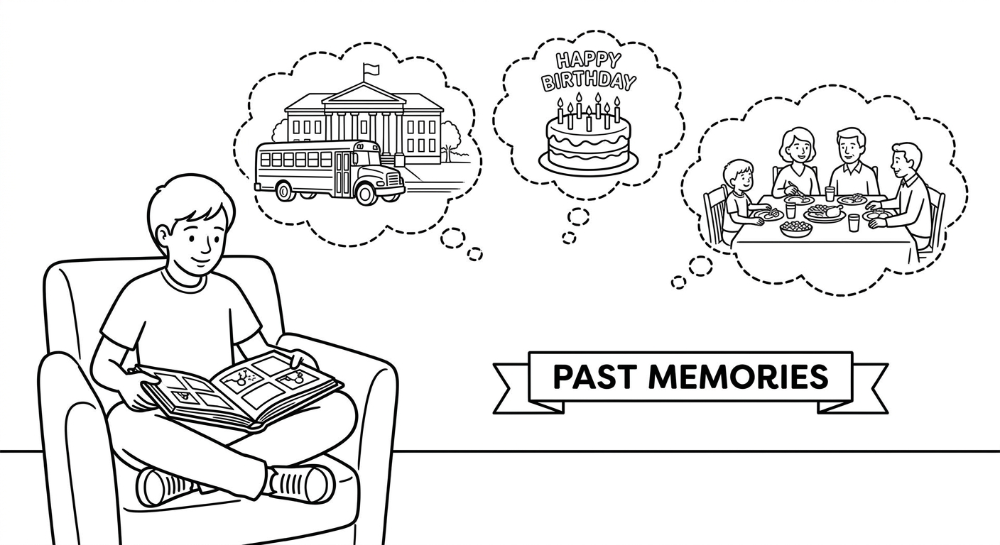
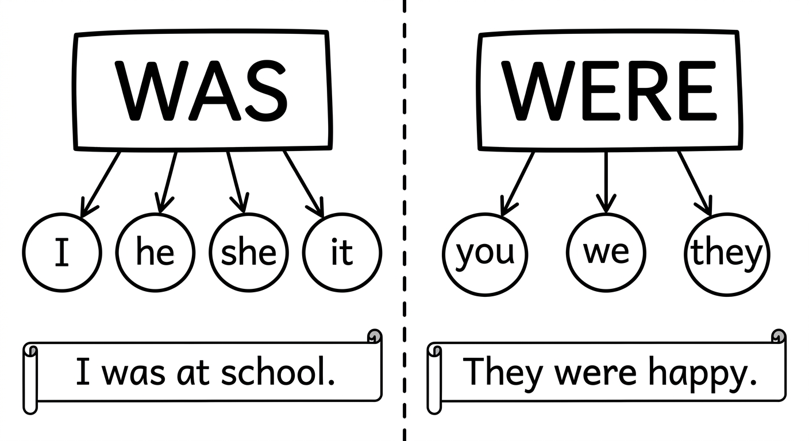
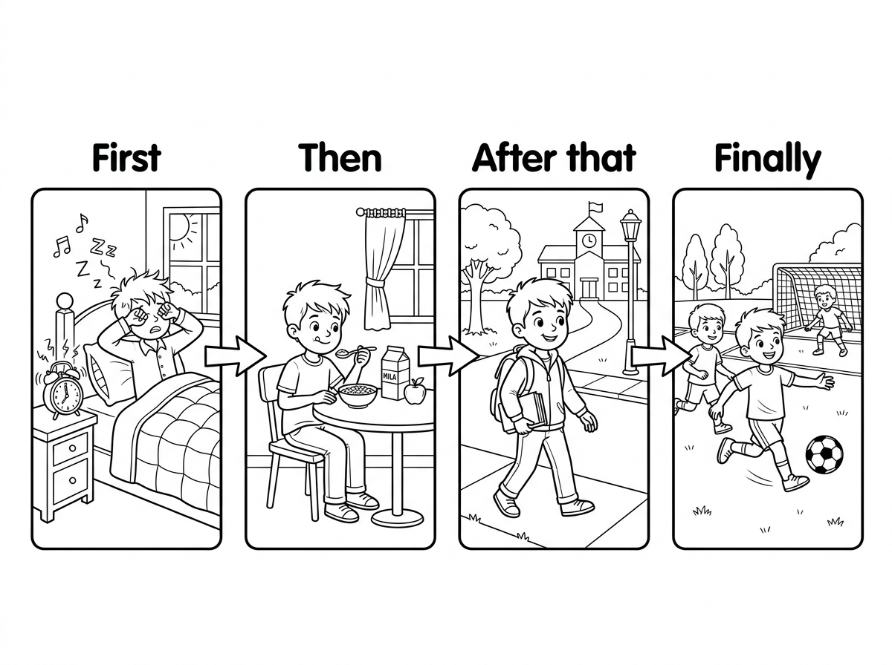
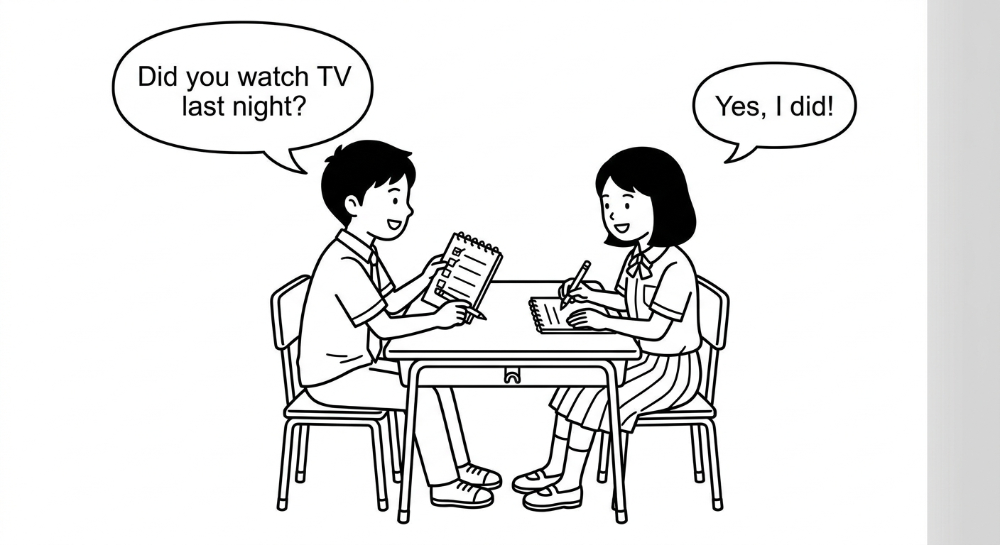
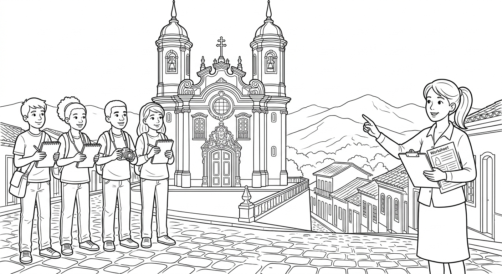

Simple Past: Practice and Contextual Usage
Practice the Simple Past in real-life contexts: telling stories, describing past events, and asking questions about the past.

Was / Were (Past of "To Be")
The verb "to be" has two past forms: was and were.
(O verbo "to be" tem duas formas no passado: was e were.)
| Subject | Affirmative | Negative | Question |
|---|---|---|---|
| I | I was | I was not (wasn't) | Was I...? |
| You | You were | You were not (weren't) | Were you...? |
| He / She / It | He/She/It was | He/She/It was not (wasn't) | Was he/she/it...? |
| We | We were | We were not (weren't) | Were we...? |
| They | They were | They were not (weren't) | Were they...? |
Short answers:
- Yes, I was. / No, I wasn't.
- Yes, you/we/they were. / No, you/we/they weren't.
- Yes, he/she/it was. / No, he/she/it wasn't.
Use there was for singular nouns and uncountable nouns. Use there were for plural nouns.
(Use "there was" para substantivos no singular e incontaveis. Use "there were" para substantivos no plural.)
| Form | Singular / Uncountable | Plural |
|---|---|---|
| Affirmative | There was a cat on the roof. | There were many students in the room. |
| Negative | There wasn't any milk. | There weren't any chairs. |
| Question | Was there a party? | Were there many people? |
Examples in Context
Rafaela was very happy yesterday.
Rafaela estava muito feliz ontem.
We were at the beach last weekend.
Nos estivemos na praia no fim de semana passado.
The test wasn't difficult.
A prova nao foi dificil.
They weren't at school on Monday.
Eles nao estavam na escola na segunda-feira.
Was the movie good?
O filme foi bom?
Were you at the party last night?
Voce estava na festa ontem a noite?
There was a big tree in front of the school.
Havia uma arvore grande na frente da escola.
There were many people at the festa junina.
Havia muitas pessoas na festa junina.
Use was with I / he / she / it and were with you / we / they. A common mistake is saying "I were" or "they was" -- remember: "I was, they were!"
(Use "was" com I/he/she/it e "were" com you/we/they. Um erro comum e dizer "I were" ou "they was" -- lembre-se: "I was, they were!")

Suggested time: 25 minutes
Warm-up: Ask students: "Where were you yesterday at 3 p.m.?" and "Was it a good day?" Practice short answers on the board. Then ask: "Was there a lot of traffic this morning?" to introduce there was/there were.
Common L1 interference: Brazilian Portuguese uses "tinha" (tinha uma arvore, tinha muitas pessoas) for "there was/there were." Point out the structural difference: English requires "there" + was/were.
Activity: Have students describe their classroom last year using was/were and there was/there were (e.g., "There were 30 students. The teacher was Professora Maria.").
Fill in the blanks with was, were, wasn't, or weren't.
(Complete as lacunas com was, were, wasn't ou weren't.)
Fill in the blanks with there was, there were, there wasn't, or there weren't.
(Complete com there was, there were, there wasn't ou there weren't.)
Telling Stories in the Past
When we tell a story in the past, we use sequence words to show the order of events. These words help the listener understand what happened first, next, and last.
(Quando contamos uma historia no passado, usamos palavras de sequencia para mostrar a ordem dos eventos.)
Common structure:
First, + past tense sentence. Then, + past tense sentence. After that, + past tense sentence. Finally, + past tense sentence.
Important: All the main verbs in the story should be in the past tense (Simple Past).
| Sequence Word | Portugues | Example |
|---|---|---|
| first | primeiro / em primeiro lugar | First, I woke up early. |
| then | entao / depois | Then, I took a shower. |
| next | em seguida / depois | Next, I ate breakfast. |
| after that | depois disso | After that, I went to school. |
| later | mais tarde | Later, we had a math test. |
| suddenly | de repente | Suddenly, it started to rain. |
| eventually | finalmente / por fim | Eventually, the bus arrived. |
| finally | finalmente / por ultimo | Finally, I went to bed. |

Example: A Short Story
Last Saturday, something funny happened to Gustavo. First, he woke up late because his alarm didn't ring. Then, he ran to the kitchen and ate breakfast very fast. Next, he took a quick shower and got dressed. After that, he ran to the bus stop, but the bus had already left. Suddenly, his mother appeared in the car and gave him a ride. Finally, he arrived at his friend's house -- but nobody was there! He checked his phone and realized the party was on Sunday, not Saturday!
No sabado passado, algo engracado aconteceu com o Gustavo. Primeiro, ele acordou tarde porque o despertador nao tocou. Depois, ele correu para a cozinha e tomou cafe da manha bem rapido. Em seguida, tomou um banho rapido e se vestiu. Depois disso, correu ate o ponto de onibus, mas o onibus ja tinha ido embora. De repente, a mae dele apareceu de carro e deu uma carona. Finalmente, ele chegou na casa do amigo -- mas ninguem estava la! Ele olhou o celular e percebeu que a festa era no domingo, nao no sabado!
When you tell a story in the past, all the main verbs should be in the past tense. Don't mix present and past tenses in the same story!
(Quando voce conta uma historia no passado, todos os verbos principais devem estar no passado. Nao misture presente e passado na mesma historia!)
- Correct: "I went to the park and played soccer."
- Incorrect: "I went to the park and play soccer."
Suggested time: 30 minutes
Activity: Before Exercise 3, read the example narrative aloud and ask students to identify all the sequence words. Write them on the board in order. Then ask a student to retell the story in their own words using the sequence words as a guide.
Pair work: Have students tell each other a short story about something that happened last week using at least 4 sequence words. Partners should listen and then retell the story to the class.
Common error: Students may use the present tense in narratives. Remind them: "A story that already happened = past tense for ALL verbs."
The sentences below tell a story about Carolina's day, but they are in the wrong order. Number them from 1 to 8 to put the story in the correct order. Use the sequence words to help you.
(As frases abaixo contam uma historia sobre o dia da Carolina, mas estao fora de ordem. Numere de 1 a 8 para colocar a historia na ordem correta.)
Complete the story with the past tense of the verbs in parentheses.
(Complete a historia com o passado dos verbos entre parenteses.)
Past Tense Questions and Interviews
To make questions in the Simple Past, use Did + subject + base verb (not past tense!).
(Para fazer perguntas no Simple Past, use Did + sujeito + verbo na forma base -- nao no passado!)
| Question Type | Structure | Example |
|---|---|---|
| Yes/No | Did + subject + base verb? | Did you go to the party? |
| WH-question | WH word + did + subject + base verb? | Where did you go yesterday? |
| Was/Were | Was/Were + subject + complement? | Was she happy? |
| WH + was/were | WH word + was/were + subject? | Where were you last night? |
Common WH words: What, Where, When, Who, Why, How, How long, How many
Important: After did, always use the base form of the verb:
- Correct: Did you go? (NOT: Did you went?)
- Correct: What did she eat? (NOT: What did she ate?)
Examples: Interview Questions and Answers
Did you travel during the holidays? -- Yes, I did. I went to Bahia.
Voce viajou durante as ferias? -- Sim. Eu fui para a Bahia.
Where did you study before this school?
Onde voce estudou antes desta escola?
What did you do last weekend? -- I visited my grandparents.
O que voce fez no fim de semana passado? -- Eu visitei meus avos.
When did you start learning English? -- I started two years ago.
Quando voce comecou a aprender ingles? -- Eu comecei ha dois anos.
Were you nervous before the presentation? -- Yes, I was, but it went well.
Voce estava nervoso(a) antes da apresentacao? -- Sim, estava, mas foi bem.
Why did you miss class yesterday? -- Because I was sick.
Por que voce faltou a aula ontem? -- Porque eu estava doente.

In English, we usually give short answers to Yes/No questions. Don't just say "Yes" or "No" -- add the auxiliary verb!
(Em ingles, geralmente damos respostas curtas. Nao diga apenas "Yes" ou "No" -- adicione o verbo auxiliar!)
- Did you go? -- Yes, I did. / No, I didn't.
- Was he happy? -- Yes, he was. / No, he wasn't.
- Were they at home? -- Yes, they were. / No, they weren't.
Suggested time: 25 minutes
Activity: Pair Interview -- Have students work in pairs. Student A interviews Student B using the questions from Exercise 5 (and their own questions), then they switch roles. Each student should take notes on their partner's answers and report back to the class: "Ana went to the beach last vacation. She was very happy."
Common error: Students often say "Did you went?" instead of "Did you go?" Reinforce: after "did," always use the base form. Write on the board: "Did + BASE VERB (go, eat, play -- NOT went, ate, played)".
Extension: For stronger students, introduce "How long did you stay?" and "Who did you go with?" as additional question patterns.
Write a past tense question for each answer given. Use the words in parentheses to help you.
(Escreva uma pergunta no passado para cada resposta. Use as palavras entre parenteses para ajudar.)
Q: (Where / go / last vacation)
A: I went to Fortaleza.
Where did you go last vacation?Q: (What / eat / dinner)
A: I ate rice, beans, and chicken.
What did you eat for dinner?Q: (Did / watch / the soccer game)
A: Yes, I did. It was amazing!
Did you watch the soccer game?Q: (When / she / arrive)
A: She arrived at 8 o'clock.
When did she arrive?Q: (Why / be / late)
A: Because the bus broke down.
Why were you late?Q: (How / be / the movie)
A: It was really good! I loved it.
How was the movie?Complete the interview between two classmates. Fill in the blanks with the correct question or answer in the Simple Past.
(Complete a entrevista entre dois colegas de classe. Preencha as lacunas com a pergunta ou resposta correta no passado simples.)
Thiago: What did you do last weekend?
Leticia:
I went to the beach with my family. (Answers may vary; accept any logical past tense response.)Thiago:
Leticia: Yes, it was. It was sunny and hot.
Was the weather good? (Accept: Was it sunny? / How was the weather?)Thiago: Did you swim in the ocean?
Leticia:
Yes, I did. The water was warm. (Accept any logical past tense response.)Thiago:
Leticia: We ate grilled fish and acai.
What did you eat there? (Accept: What did you eat? / Did you eat anything special?)Thiago: When did you come back home?
Leticia:
We came back on Sunday evening. (Accept any logical past tense response.)Thiago:
Leticia: Yes, I was! But it was a wonderful weekend.
Were you tired after the trip? (Accept: Was it a good trip? / Were you happy?)Reading & Writing
Last July, the students from Escola Municipal Monteiro Lobato went on a school trip to Ouro Preto, a historic city in Minas Gerais. The trip was organized by the history teacher, Professor Marcos, and the English teacher, Teacher Renata.
First, the students took a long bus ride from Belo Horizonte to Ouro Preto. The trip was about two hours. On the bus, the students were very excited. They talked, listened to music, and played games. There were 35 students and 4 teachers on the bus.
When they arrived, Teacher Renata gave each student a worksheet in English with questions about the city. She said, "Today we are going to practice English and learn history at the same time!"
Then, they visited the Museum of Inconfidencia. The guide told them about Tiradentes and the history of Minas Gerais. The students took many photos and wrote notes for their worksheets. After that, they walked through the beautiful colonial streets. There were old churches, colorful houses, and small shops everywhere.
Next, they stopped for lunch at a traditional restaurant. They ate feijao tropeiro, tutu de feijao, and couve. The food was delicious! There was also a special dessert: doce de leite.
Later in the afternoon, they visited the Church of Sao Francisco de Assis. The art inside was incredible. The students were amazed by the gold decorations. Suddenly, it started to rain, so they ran to a covered area and waited. Professor Marcos told funny stories to keep everyone happy.
Finally, they went back to the bus. On the way home, many students were tired and slept. Others talked about their favorite parts of the trip. Amanda said, "The museum was my favorite." Bruno said, "I loved the food!" And Isabela said, "I want to come back with my family."
It was a wonderful day. The students learned about history, practiced their English, and made great memories together.

Pre-reading: Show photos of Ouro Preto and ask: "Have you ever visited a historic city? What did you see?" If students have not traveled, ask about school trips or local places they visited.
During reading: Have students underline all past tense verbs as they read. After reading, ask them to count how many they found (there are approximately 30+ past tense forms in the text).
Vocabulary support: Pre-teach: "worksheet" (folha de atividades), "guide" (guia), "colonial" (colonial), "decorations" (decoracoes), "covered area" (area coberta).
Read each sentence. Write T (True) or F (False) based on the text. If false, correct the sentence.
(Leia cada frase. Escreva T (Verdadeiro) ou F (Falso) com base no texto. Se falso, corrija a frase.)
Answer the questions in complete sentences based on the text. Use the past tense.
(Responda as perguntas em frases completas com base no texto. Use o passado.)
How many students and teachers were on the bus?
There were 35 students and 4 teachers on the bus.What did the students see at the Museum of Inconfidencia?
The guide told them about Tiradentes and the history of Minas Gerais. They took photos and wrote notes.What happened when it started to rain?
They ran to a covered area and waited. Professor Marcos told funny stories.What was Bruno's favorite part of the trip?
Bruno's favorite part was the food. He said, "I loved the food!"Write a short story (8-12 sentences) about something that happened to you. It can be a trip, a special day, a funny event, or an important moment. Use the Simple Past and at least 4 sequence words (first, then, after that, finally, etc.).
(Escreva uma historia curta (8-12 frases) sobre algo que aconteceu com voce. Pode ser uma viagem, um dia especial, um evento engracado ou um momento importante. Use o Simple Past e pelo menos 4 palavras de sequencia.)
Before you write, make a quick plan:
- When did it happen? (Last week, last year, when I was 10...)
- Where were you? (At school, at the beach, at home...)
- Who was with you? (My family, my friends, my teacher...)
- What happened? (Use sequence words to organize the events.)
- How did you feel? (I was happy, nervous, surprised...)
My Story:
Suggested time: 20 minutes for writing + 10 minutes for sharing
Assessment criteria:
- Correct and consistent use of Simple Past throughout the story
- At least 4 different sequence words used correctly
- Story has a clear beginning, middle, and end
- 8-12 sentences minimum
- Includes was/were where appropriate
Scaffolding: For weaker students, provide a story template: "Last _____, I _____. First, I _____. Then, _____. After that, _____. Finally, _____. I was _____ because _____." For stronger students, encourage them to include dialogue and the word "suddenly" to add surprise to their story.
Sharing activity: Have students read their stories in small groups. Listeners should identify all the sequence words used. Optionally, vote on the most interesting or funniest story.
Chapter 7 - Answer Key
Exercise 1: Complete with was, were, wasn't, or weren't
Exercise 2: Complete with There was or There were
Exercise 3: Put the Story in Order
Full story in order: (1-e) First, Carolina woke up at 9 o'clock. (2-b) Then, she ate breakfast with her family. (3-g) She helped her mother clean the kitchen. (4-f) Next, she called her friend. (5-a) After that, she took the bus to the mall with Juliana. (6-d) They looked at many stores and Carolina bought a new book. (7-h) Later, they ate pizza at the food court. (8-c) Finally, she went to bed early.
Exercise 4: Complete the Story
Exercise 5: Write the Questions
Exercise 6: Complete the Interview
Exercise 7: True or False
Exercise 8: Answer the Questions
Exercise 9: Write Your Own Story
Answers will vary. Check for: correct use of Simple Past, at least 4 sequence words (first, then, after that, finally, etc.), a clear beginning/middle/end, 8-12 sentences minimum, and appropriate use of was/were.